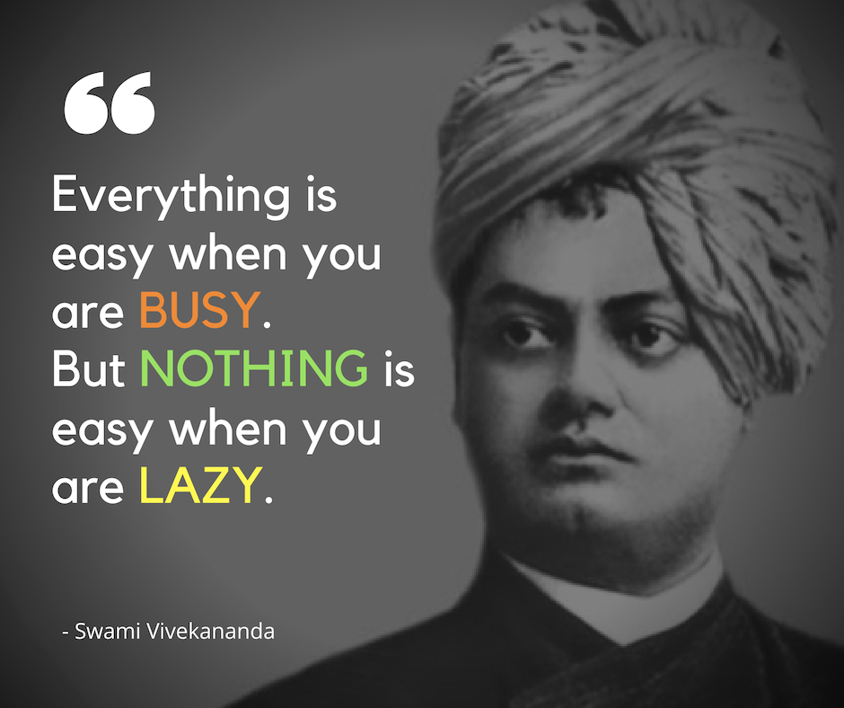
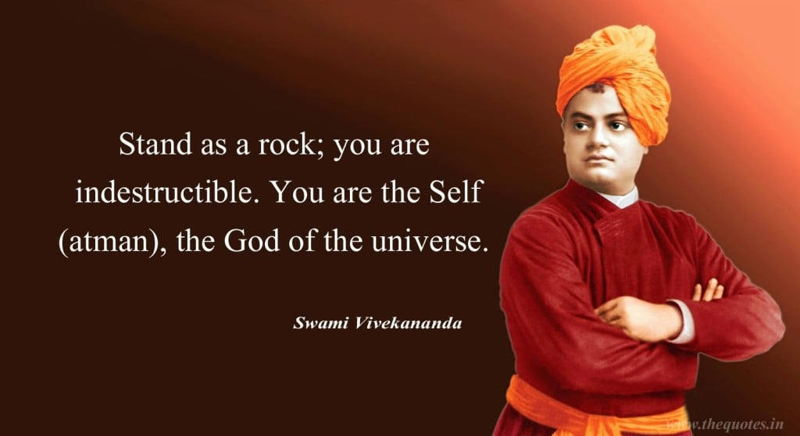
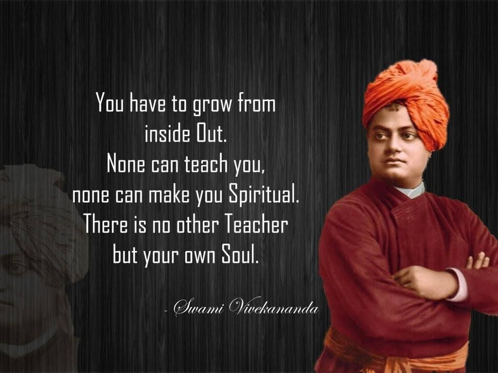
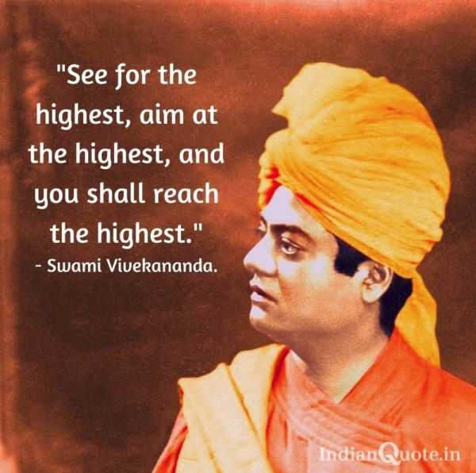
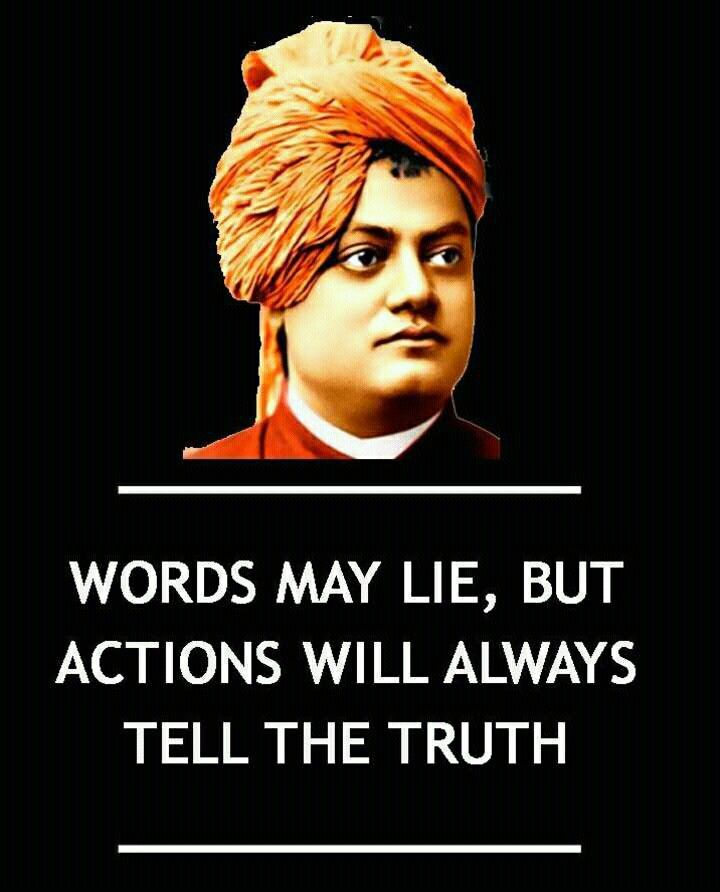

SWAMI VIVEKANAND
Arise,awake and donot stop until the goal is reached.
Facts about Swami Vivekanand
The man who introduced Hindu Vedanta philosophy to the West was almost a pauper at the time of passing away of his guru Sri Ramakrishna. He decided to walk the length and breadth of India to know the problems of his countrymen, because he felt that a sanyasin staying at a single place, would, in course of time, be inflicted by the ills of society, whereas a sanyasin, always on the move, will shield himself from the ills afflicting society.He compared this with a flowing river, which washes away all dirt, and cleanses itself continuously. Narendranath Dutta (later Swami Vivekananda), decided to go on an all India tour with his associates Rakhal Chandra Ghosh, Tarak Nath Ghoshal and Baburam Ghosh, 15 days after the passing away of Sri Ramakrishna.1887: Vivekananda was walking with Swami Premananda on the streets of Varanasi, when a group of monkeys chased them. The two sanyasins ran for their lives. Suddenly, an old sanyasin shouted: Stop, stand up against the animals. Both the sanyasins stopped in their tracks, and the pack of monkeys also stopped eyeing both of them. Vivekananda later narrated this in New York. His advice was : “Always stand up to adversities. Face obstacles with courage. If we want to attain salvation, we have to face up to nature, we can’t run away from nature. If we want to remove fear, obstacles and ignorance, we have to declare war against them.”1888: While walking the remaining 30 miles between Agra and Vrindavan, the swami saw a man sitting on the roadside, smoking chillum (ganja: cannabis). Suddenly, Vivekananda said, I’ll also smoke. When he sought the chillum from the man, he shied away saying “Maharaj, you are a sadhu, and I am a bhangi (low caste)”. The swami stood up to leave, but suddenly, he thought “I am a sanyasin, I have left all castes and family ties aside. Why shouldn’t I smoke a bhangi’s chillum”. Vivekananda began to smoke chillum. Later, while mentioning the incident, Vivekananda said: “Never hate your fellow beings. All of them are children of God.”While circumambulating the Govardhan hill, Vivekananda suddenly decided, I shall stop begging food from people. Let people give me food on their own. On day one, till afternoon, nobody offered food. As the swami began walking with pangs of hunger, it began to drizzle. Suddenly somebody called him from behind, but to test the man’s patience, Vivekananda began to run. The man also began to run after him. Finally, he caught hold of the swami and said, Maharaj, please accept this food. Tears flowed down Vivekananda’s eyes. He knew that God was with him all the time.While going to Haridwar, the swami met Sharat Chandra Gupta, an assistant station master at Hathras station. He became an ardent devotee of the swami, just by looking into Vivekananda’s large eyes. When the swami began to leave Hathras, Gupta insisted on accompanying him. Vivekananda initially declined, but sensing his insistence, he gave him Diksha and named him Swami Sadananda. This disciple used to describe himself as “Vivekananda’s dog”. He used to tell others :”He (Vivekananda) is such a great guru that he even lifted my shoes, and whenever I was sick, he used to help me. He is lovable, full of love, the very embodiment of love”.1890: On January 22, Vivekananda reached Ghazipur in eastern UP. He had heard of a great baba, Powhari Baba, who lived in a cave, and used to consume negligible quantity of food. On February 4, swamiji wrote to Pramadadas Mitra saying he met the baba who was a “mahapurush”(great saint). Vivekananda decided to take Diksha from the baba, but on the preceding night, he saw in his dream Sri Ramakrishna standing silently near his bed, watching him sadly. The swami temporarily abandoned his idea. For 21 nights, Vivekananda saw Sri Ramakrishna in his dream standing near his bed in a sad mood, and ultimately the sannyasin decided not to take diksha from the baba. He then wrote to Mitra: “I will now never go to any miyan (babas) now.”1890: On hearing of Swami Abhedananda’s illness, Vivekananda rushed from Ghazipur to Varanasi. On the way, he learnt, Sri Ramakrishna’s loyal servant Balaram Basu was no more. Tears welled in swamiji’s eyes. Pramadadas Mitra then told him, “expressing grief does not behove a sanyasin”. Swamiji replied aggressively: “What do you say? Should I cast off my heart just because I am a sanyasin. I don’t accept the sanyas that asks one to make one stone-hearted.”    If you have time, you should read more about this incredible human being on his Wikipedia .